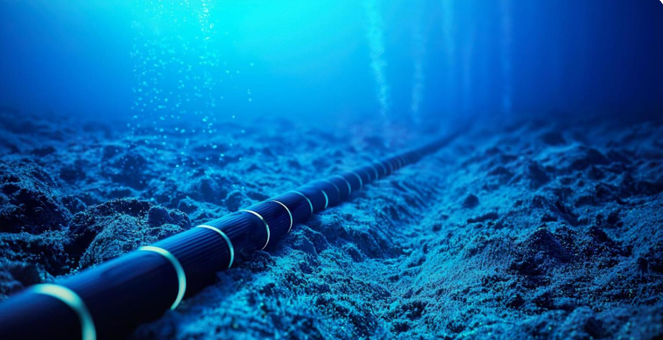

Every time you send a WhatsApp message, watch a YouTube video or visit a website, information travels across an enormous network. But here's something surprising: a large part of the internet's international journey happens beneath the ocean.
We often hear people talk about the cloud when referring to online storage and internet services. It sounds as though our information floats somewhere above us, but the internet depends on physical equipment: computers, servers, routers and cables.
One of the most important parts of this network is hidden beneath the sea. They are called submarine fibre-optic cables . These are special cables laid across the ocean floor to connect countries and continents.
Inside these cables are extremely thin strands of glass called optical fibres . Instead of carrying information as ordinary electrical signals, they transmit data using pulses of light.
That means the messages, pictures and videos travelling between distant countries can move through light signals inside cables resting thousands of metres beneath the ocean.
The internet may seem invisible, but much of its infrastructure is very real, very physical and sitting at the bottom of the sea.
| Submarine Cables | Satellites |
|---|---|
| Carry huge amounts of data. | Cover wide areas. |
| Usually have lower delay. | Delay can be higher. |
| Connect countries across oceans. | Reach remote locations. |
These cables are designed to last for many years,
but they can be damaged by ship anchors,
fishing equipment or natural disasters.
When this happens, repair ships work to locate and fix the problem.
Remember, some of the technology making it possible may be resting thousands
of metres beneath the ocean.
The internet isn’t just in the air. A huge part of it is under the sea.